Sculptures, paintings, and films by Linn Bäckman exploring the connection
between movement, colors and narratives
**Paintings & sculptures**
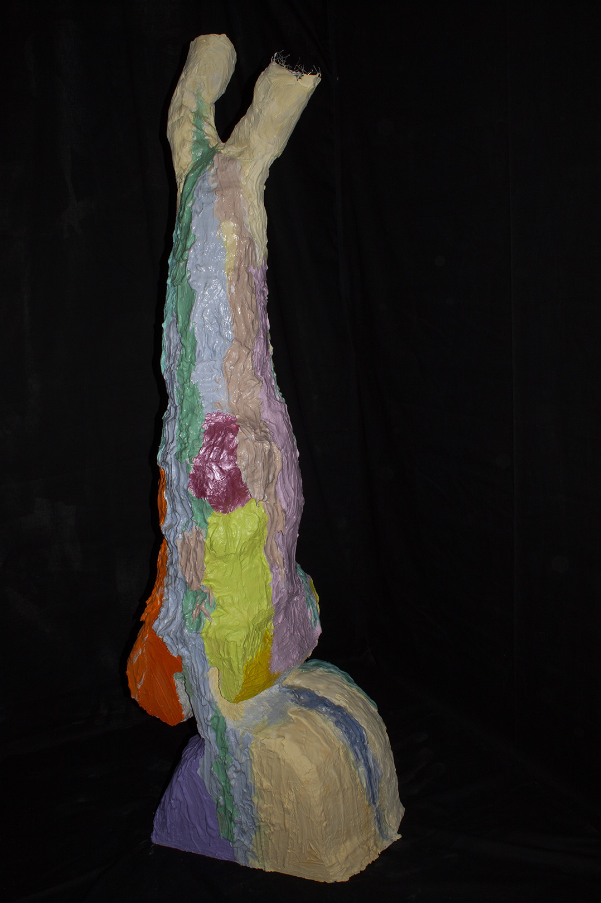
*Fantasy tree*
0
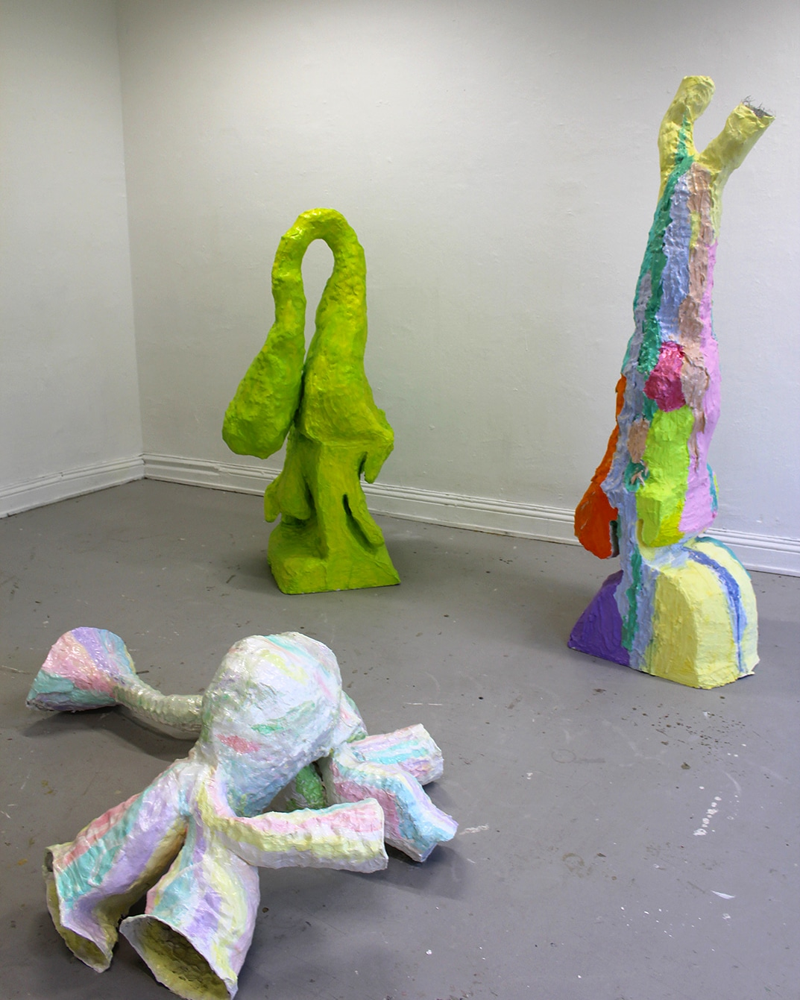
*Strange plants*
0
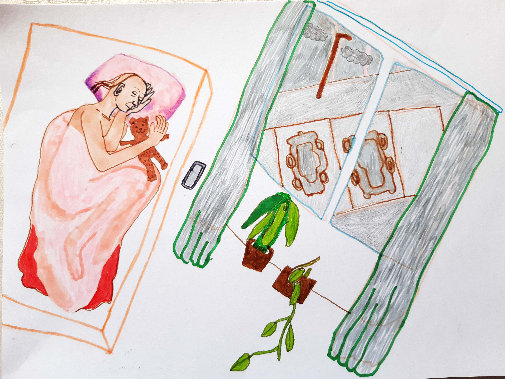
*The disappointing wedding*
0
*Pink eye*
0
*Feeding birds*
0
*New York City*
0
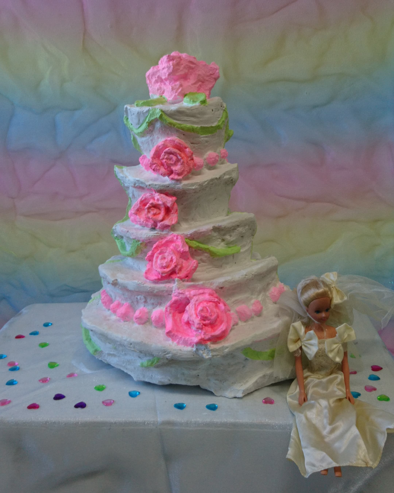
*Wedding creature*
0
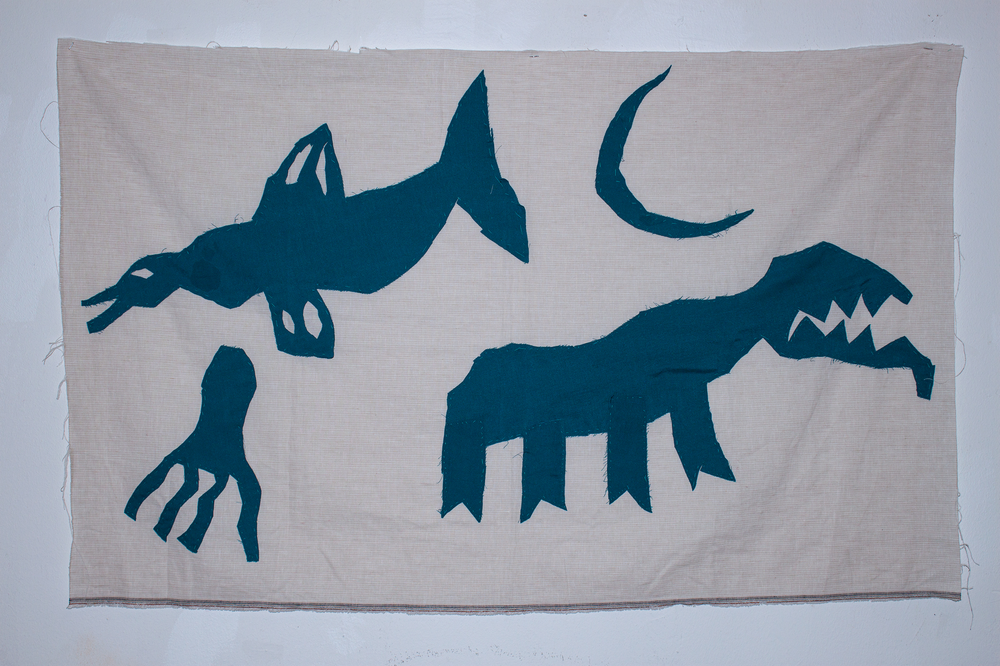
*Way back*
0
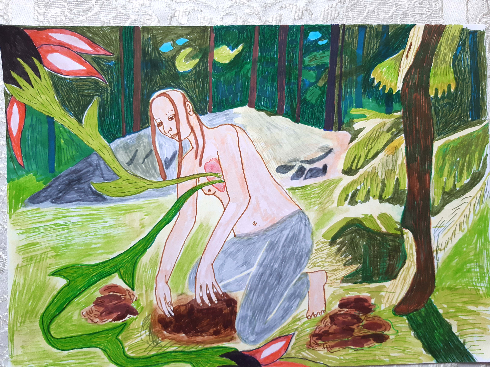
*Dust of time*
0
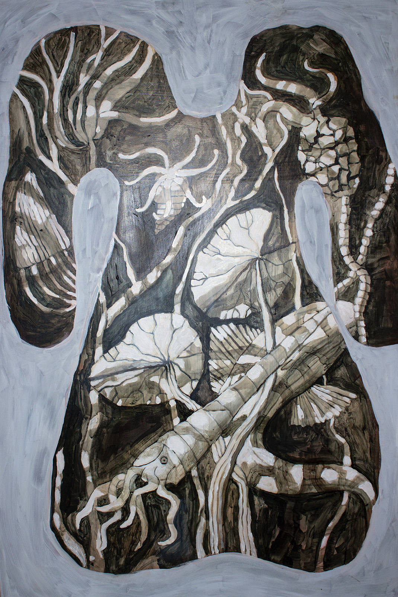
*Swimming fossile kids*
0
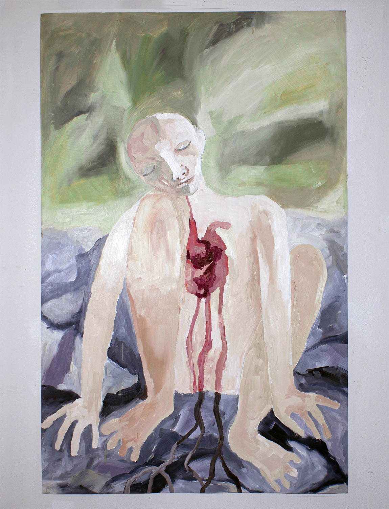
*Just one more Coca cola*
0
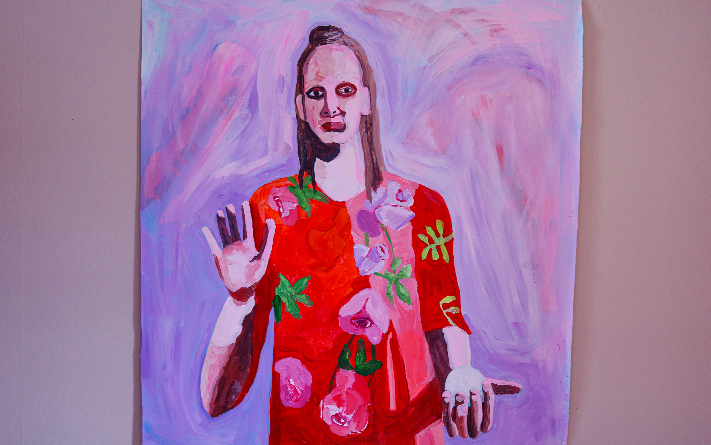
*Afterlight*
0
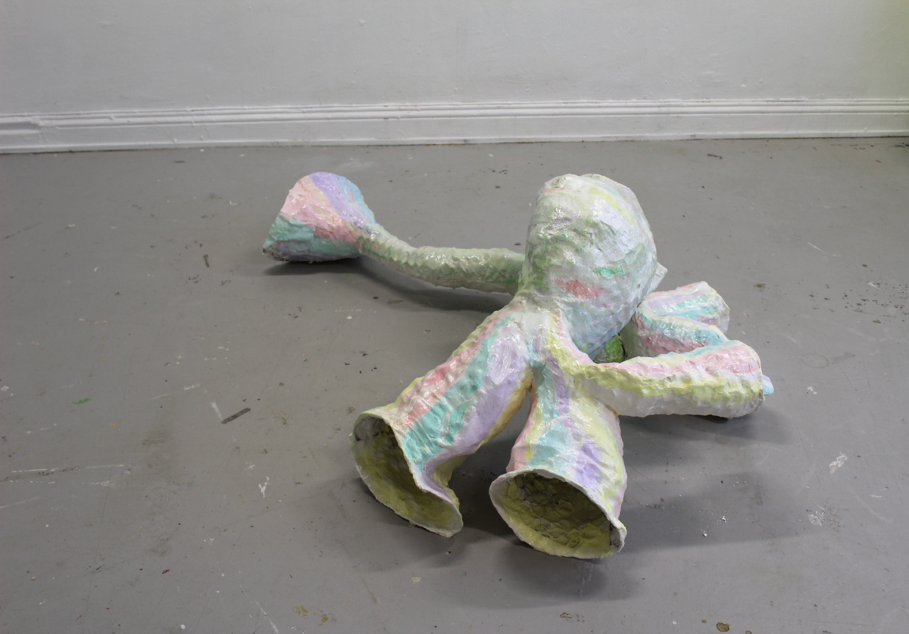
*Dont forget your glasses*
0
*Home sweet home*
0
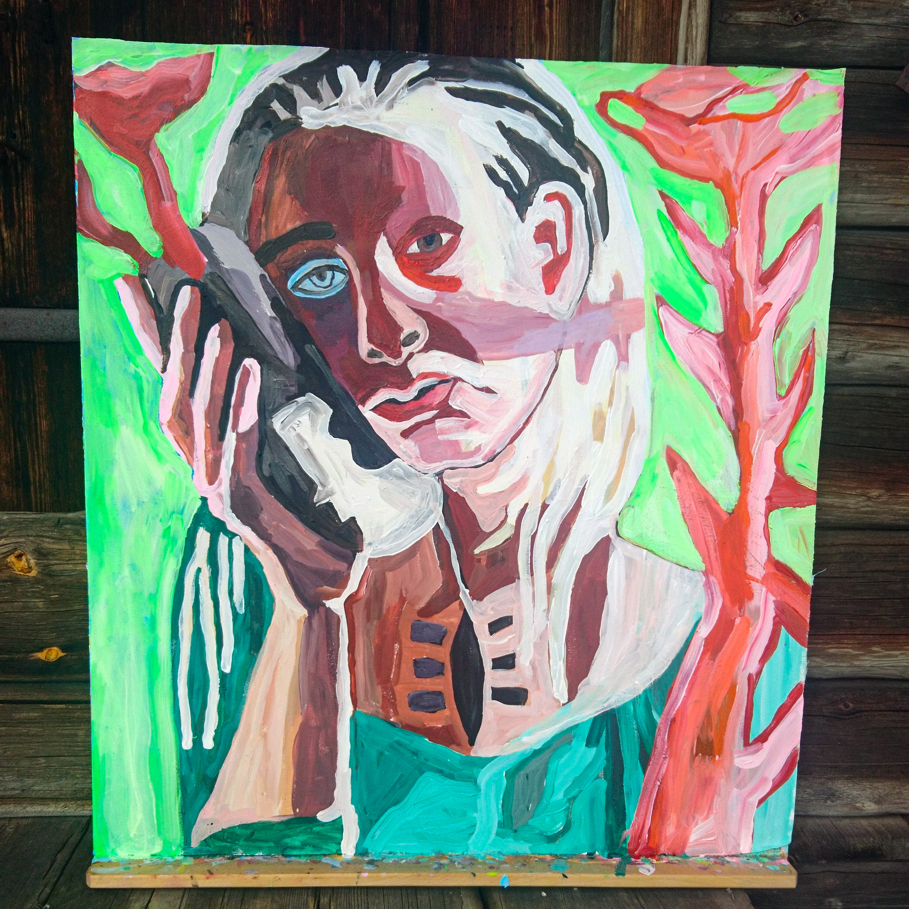
*It is not a cell phone, it is a rock*
0
*Bird land*
0
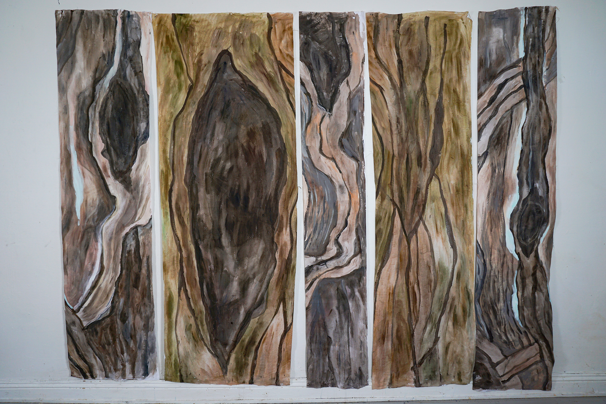
*Hide and seek in trees*
0
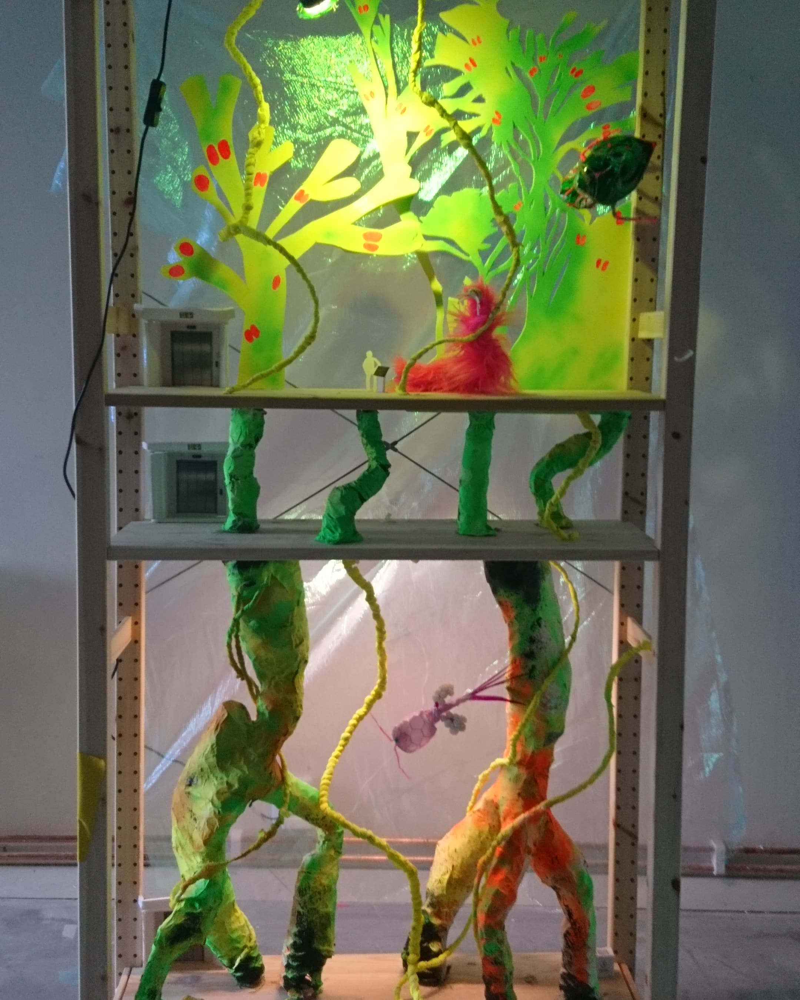
*Underwater shelf*
0
**Short films**
*BUTTERFLY DREAMS*
0
*PEARL*
0
*GANGSTER COOKIES*
0
*FIRST KISS*
0
*OSKIS HOPP*
0
*SMOKING ELF*
0
**About**
Linn Bäckman’s work explores the worlds of color and movement, through the childlike eyes of curiosity. Through playing
with different materials: clay, fabric, found stuff, drawing digitally and by hand, she seeks to capture the dialogue
between creation and feeling. The work flow is intuitive; because if everything is known from the beginning, there is
nothing left to be curious about. Working across painting, sculpture, and film, Linn’s creations are guided by a fascination
with transformation — how shapes can start to move. While others might find connection through words, Linn finds it in the
interconnections of form, light, and emotion.
**All starts here**
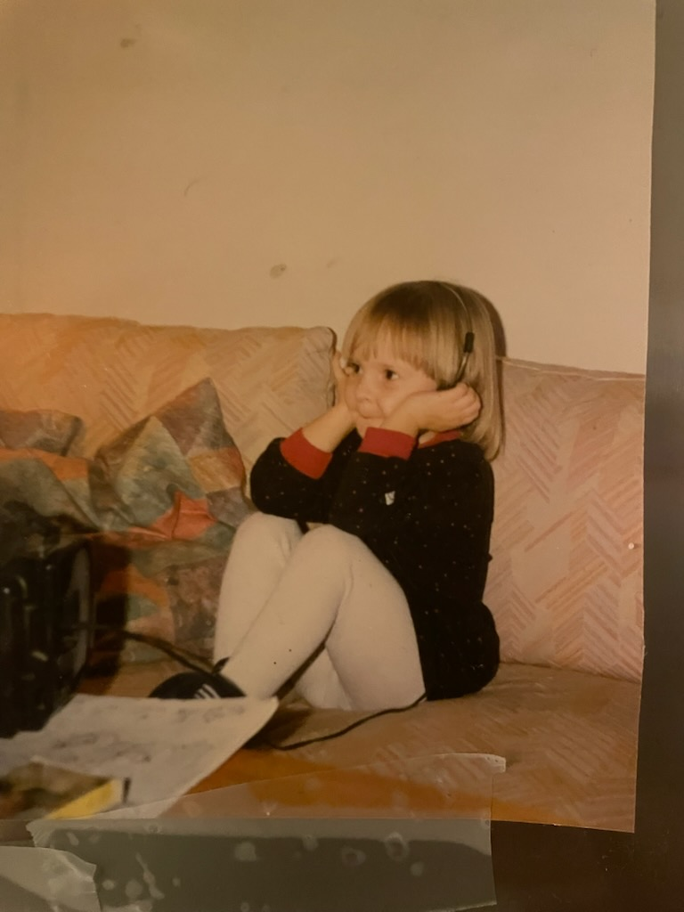
Growing up in the suburb to Stockholm in the late 80's, Linn was happiest when drawing, reading or dressing up in her mom's homesown clothes. Listening to
music and playing in fantasy worlds were places to go to. Drawing flying unicorns and dancing flowers is a natural thing for kids. Living in that space of
acceptance to the wierdness within, is a key for Linn's work. Creating things without them having to be perfect. She has attended Gothenburg school of arts
(painting), Idun Loven school of arts (sculpture) and the Animation academy in Stockholm to study animation and film.
**Process**
Each work begins with raw material — plaster, clay, or footage — and unfolds through motion
and experiment. Linn does not command or dictate her materials; she often lets them guide her.
Texture changes her rhythm, and movement becomes some kind of language. In the studio, creation
is not a story already made ahead, but a cocreation between matter and emotion, guided by instinct and the pull of
feeling.